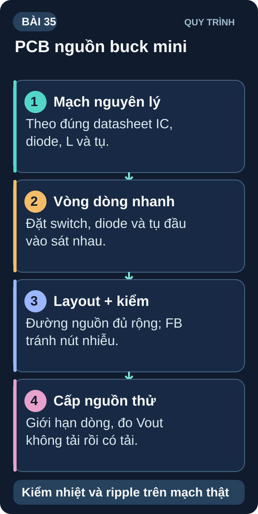
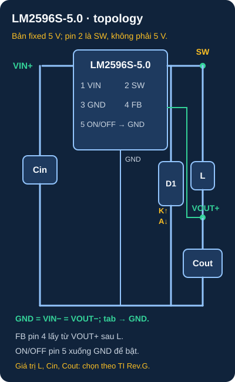
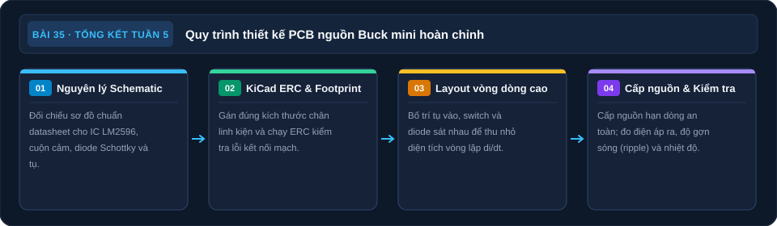

Ôn Tập Tuần 5 & Mini Project: PCB Buck Converter
Tổng hợp mô phỏng, oscilloscope, bộ lọc, nguồn switching và KiCad — lập thiết kế PCB Buck 12V→5V để rà bằng ERC/DRC trước khi chế tạo.

1. Ôn tập nhanh Tuần 5
| Câu hỏi | Đáp án |
|---|---|
| 3 loại phân tích SPICE quan trọng nhất? | .op (DC), .tran (Transient), .ac (AC Sweep) |
| Oscilloscope: Volt/div=500mV, 6 ô dọc → Vpp = ? | 6 × 500mV = 3Vpp |
| RC LPF: R=22kΩ, C=47nF → f_c = ? | 1/(2π×22000×47×10⁻⁹) = 153,7Hz |
| Buck converter: V_in=9V, V_out=3,3V → D = ? | D = 3,3/9 = 36,7% |
| Chọn diode hồi dòng cho buck không đồng bộ như thế nào? | Dựa vào V_R, I_F, dòng đỉnh, tổn hao và tốc độ chuyển mạch của thiết kế; Schottky thường phù hợp, không dùng 1N4007 chung cho mạch tần số cao. |
| Track width cho 1A trên PCB được xác định thế nào? | Tính theo lớp đồng, độ dày, chiều dài, độ tăng nhiệt và quy tắc nhà sản xuất; không có một bề rộng tối thiểu đúng cho mọi board. |
| Kiểm tra PCB: GND↔VCC đo được 5Ω → làm gì? | Chưa cấp nguồn; so số đo với schematic/BOM và tải dự kiến, kiểm cực tính/cầu hàn. Không kết luận short chỉ từ một ngưỡng điện trở chung. |
2. Mini Project Tuần 5: PCB Buck Converter 12V→5V/1A
- IC: LM2596S-5.0 (TO-263/KTT, đầu ra 5 V cố định). Bản LM2596S-ADJ cần mạng hồi tiếp khác, không dùng nguyên sơ đồ của bản cố định
- V_in: 8–40V (terminal screw 5.08mm)
- V_out: 5V danh định, tải thiết kế 1A; sai số đầu ra theo datasheet TI có thể tới ±5% trên toàn dải điều kiện.
- Cuộn cảm: L dự kiến 68µH, xác nhận lại bằng quy trình chọn L trong datasheet TI cho 12V→5V/1A; dòng bão hòa phải vượt dòng đỉnh.
- Diode freewheeling: Với Vin,max = 40 V, chọn Schottky có điện áp ngược định mức ≥50 V (1,25 × 40 V), dòng trung bình định mức ≥1,3 A (1,3 × 1 A) và đủ biên cho dòng đỉnh, nhiệt, điều kiện ngắn mạch theo quy trình TI LM2596. SS34 3 A/40 V không đạt biên điện áp này; chốt mã/footprint thực trước khi layout.
- Tụ đầu vào: 100µF/50V electrolytic + 100nF ceramic
- Tụ đầu ra: 220µF/16V ESR thấp + 100nF ceramic
- Output indicator LED: LED xanh + R=1kΩ/0805
- Connector đầu ra: 2-pin JST 2.54mm hoặc screw terminal
2.1 Schematic LM2596S-5.0

Đọc mô tả sơ đồ D35-1 bằng chữ
Với LM2596S-5.0 dạng TO-263 theo TI, pin 1 nhận VIN+, pin 2 OUTPUT là SW và đi qua L đến VOUT+, pin 3 và tab nối GND, pin 4 FEEDBACK lấy VOUT+ sau L, pin 5 ON/OFF nối GND để bật. Cin mắc VIN+–GND; Cout mắc VOUT+–GND; D1 Schottky có cathode nối SW và anode nối GND. VIN− và VOUT− cùng GND. Đây là topology; chọn L, diode, tụ và bố trí theo datasheet, điều kiện tải và PCB thực tế.
Đối chiếu datasheet LM2596 của TI trước khi vẽ symbol và chọn linh kiện; “OUTPUT” ở pin 2 là nút chuyển mạch SW, không phải đầu ra 5V sau cuộn cảm.
2.2 Quy trình thiết kế PCB trong KiCad
Vẽ schematic đầy đủ theo các net và pin của TI LM2596S-5.0 ở trên; hình minh họa chưa thay thế bản vẽ EDA. Chú ý kiểm pin của symbol LM2596S trong thư viện KiCad (Regulator_Switching) và chạy ERC trước khi layout.
Assign footprint theo đúng mã/package mua: LM2596S TO-263-5 (tab = GND theo TI), diode Schottky theo package thực, cuộn cảm có dòng bão hòa lớn hơn dòng đỉnh, tụ đúng điện áp/ESR.
PCB Layout: VIN connector → C_in sát chân 1 → LM2596 pin 2 → L → C_out → VOUT connector. Thu nhỏ vòng chuyển mạch C_in→IC→D1→GND và nút SW; FB lấy ở VOUT, tránh xa SW.
Tính bề rộng đường VIN, VOUT và GND theo lớp đồng, độ tăng nhiệt cho phép, chiều dài và quy tắc nhà sản xuất PCB; 2 mm chỉ là giá trị khởi đầu cần kiểm tra, không phải định mức 1 A chung cho mọi board. Tín hiệu ON/OFF cần giữ xa SW.
Ground plane B.Cu; vùng đồng tản nhiệt của tab TO-263 thuộc GND. Kiểm tra net tab trong symbol/footprint trước khi đặt copper pour.
Thêm silk screen: "IN+", "IN−", "OUT+", "OUT−". Version, date.
DRC → 0 errors → Xuất Gerber + Drill files → Tải lên JLCPCB/PCBWay để báo giá (5 PCB ~$2–5).
2.3 Điểm quan trọng về layout Buck Converter
- Loop nhiễu lớn: Vòng lặp C_in(+) → IC switch → D1 (anode về GND) → C_in(−) phải cực nhỏ. Loop lớn làm tăng EMI.
- Cạnh switching node (SW) dài: Nút SW nối IC OUTPUT, cathode D1 và cuộn cảm là nguồn EMI chính. Track phải cực ngắn và không gần tín hiệu analog nhạy cảm.
- Tụ đầu vào xa IC: C_in phải sát chân VIN của IC — loại bỏ spike dòng khi MOSFET bật.
3. Tổng kết Tuần 5
| Bài | Kiến thức cốt lõi đạt được |
|---|---|
| 29 | Mô phỏng Falstad & LTSpice — DC/Transient/AC |
| 30 | Oscilloscope — đọc waveform, trigger, probe calibration |
| 31 | Bộ lọc RC — LPF, HPF, BPF, tính f_c |
| 32 | Buck/Boost converter — nguyên lý, hiệu suất, chọn diode |
| 33 | KiCad — schematic, footprint, PCB layout, DRC, Gerber |
| 34 | Hàn SMD — kỹ thuật, lỗi, kiểm tra PCB 5 bước |
| 35 | Tổng hợp — PCB Buck converter hoàn chỉnh |
Tuần 6 bắt đầu các dự án tích hợp: từ yêu cầu → sơ đồ khối → mạch → firmware → kiểm thử. Khi chưa có đúng model/revision và người duyệt phần nguồn, motor hoặc pin, hãy hoàn thành nhánh phân tích, mô phỏng và thiết kế số; chỉ chuyển sang lắp, hàn và cấp nguồn sau khi các thông số điện/nhiệt đã được kiểm.
Sơ đồ tổng hợp Bài 35

Đọc nội dung sơ đồ bằng chữ
- Schematic: Đối chiếu IC, L, diode và tụ. (mục Schematic LM2596S-5.0).
- Đưa vào KiCad: Ghép footprint rồi chạy ERC/DRC. (mục Quy trình thiết kế PCB trong KiCad).
- Đặt vòng dòng nhanh: Tụ vào, switch và diode đặt gần. (mục Điểm quan trọng về layout).
- Cấp điện thử: Giới hạn dòng; đo ra và ripple. (mục Tổng kết Tuần 5).